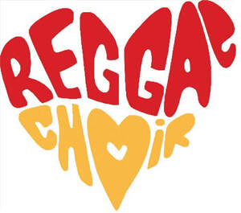
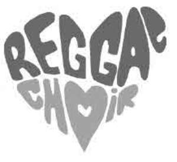

Trade Mark Journal No.2025/044 31 October 2025
UK00004283350 24 October 2025 (9,18,25,41)
Mark 1

Mark 2

- Class 9
- Sound recordings; musical sound recordings; podcasts; media content; downloadable videos; downloadable video recordings; downloadable video films; downloadable video recordings; downloadable video recordings featuring music; downloadable films; downloadable audio recordings; downloadable digital music; downloadable music recordings; downloadable musical video recordings; digital music downloadable from the internet; downloadable image files; downloadable ringtones; downloadable screen savers and screen wallpaper; downloadable applications for mobile devices; downloadable sheet music; computer software; multimedia software; computer software for entertainment; programming software; computer application software for streaming audio-visual media content via the internet; mobile software applications for downloading and streaming audio, visual and audio-visual content; audio tapes; cassettes; video tapes; digital video discs (DVD); vinyl records; pre-recorded DVDs featuring music concerts.
- Class 18
- Animal skins, hides; trunks and travelling bags; umbrellas and parasols; walking sticks; whips, harness and saddlery; handbags, purses, wallets; bags made of imitation leather; bags made of leather; beach bags; handbags; clutch bags; cosmetic bags; leather bags and wallets; purses, pocket cases, pocket wallets; key bags; luggage; travel bags, suitcases, hold-alls, trunks and valises; overnight bags; weekend bags; suit bags; tote bags; brief cases; shopping bags; sports bags; school bags; back packs.
- Class 25
- Clothing, footwear and headgear; Clothing, namely, shirts, T-shirts, hoodies, sweatshirts, trousers, jogging suits, jeans, shorts, sports shorts, swimwear, beachwear, sleepwear, robes, pyjamas, pyjama sets, tracksuits, articles of outerwear, coats, jackets, jumpers and cardigans, pullovers, twinsets, knitwear, leggings, neckties, waistcoats; clothing, namely, headbands and wristbands, skirts, wraps, jerseys, blouses, dresses, sweatshirts, bibs, ties, headbands and wristbands, overalls, halter tops, tank tops, crop tops, dresses, blazers, blouses, suits, vests, socks and hosiery, aprons, footwear, namely, boots, shoes, slippers, sandals, trainers, booties, workout shoes and running shoes, beach shoes, soles for footwear; headgear, namely, headbands, hats, caps, berets, earmuffs, top hats, visors, baseball caps, headbands, beanies; swimwear and costumes; fancy dress costumes; waterproof clothing, footwear and headgear.
- Class 41
- Entertainment services; entertainment information; presentation of live performances; arranging and conducting of concerts; arranging and conducting events; organisation of entertainment shows; concert, musical and video performances; music concerts; live music services; choir performances; presentation, production and performance of shows, musical shows, concerts, videos, multimedia videos and radio and television programmes; production and staging of shows; arrangement and performance of dance, music and drama; music festival services; organising of festivals; arranging of festivals for entertainment purposes; arranging of festivals for cultural purposes; music recording services; sound recording and video entertainment services; music production services; music publishing services; production of video and/or sound recordings; recording studio services; sound recordings provided by on-live streams; video recordings provided by on-line streams; entertainment services provided by on-line streams; providing on-line publications (non-downloadable); booking of performing artists for events (services of promoter); publication of books, magazines and other texts; radio entertainment; music education and training services; arranging and conducting of workshops and seminars; songwriting and music composition services; publication of sheet music and songbooks.
Reggae Choir Worldwide Ltd
Representative: Sheridans Solicitors LLP